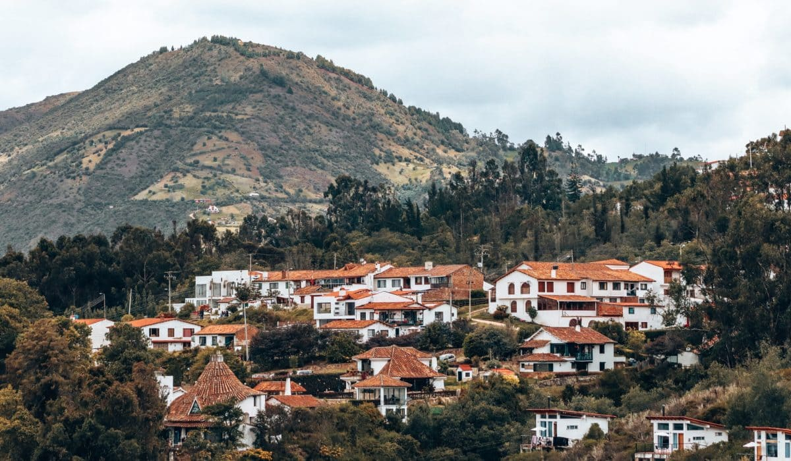

Introducción
Cundinamarca, ubicada en el centro de Colombia, es una región rica en biodiversidad gracias a su variada topografía y clima, que van desde cálidos valles hasta frías montañas andinas. Esta diversidad de condiciones ambientales permite la existencia de una amplia gama de ecosistemas que albergan numerosas especies de flora y fauna. Los bosques andinos, presentes en las zonas más elevadas, son hogar de una gran variedad de plantas endémicas y especies animales. Entre las plantas, destacan diversas orquídeas y bromelias que embellecen el paisaje con sus colores vibrantes. Los mamíferos como el puma (Puma concolor), el venado de cola blanca (Odocoileus virginianus) y el oso de anteojos (Tremarctos ornatus) también se encuentran en estos bosques, aunque sus poblaciones están amenazadas por la deforestación y la expansión urbana.
Las aves constituyen una parte significativa de la biodiversidad de Cundinamarca. Con más de 600 especies registradas, la región es un paraíso para los observadores de aves. Entre las especies más notables se encuentran el cóndor de los Andes (Vultur gryphus), el águila paramuna (Geranoaetus melanoleucus) y el tucán esmeralda (Aulacorhynchus prasinus). Además, los ríos y cuerpos de agua de Cundinamarca, como el río Magdalena, sustentan una rica variedad de peces, anfibios y reptiles, muchos de los cuales son endémicos de la región. Los humedales y lagunas, como el Humedal La Conejera y la Laguna de Fúquene, son cruciales para la biodiversidad local, proporcionando hábitats para aves migratorias y especies acuáticas. La riqueza biológica de Cundinamarca no solo es un tesoro natural, sino también un recurso esencial para el bienestar ecológico y económico de la región, subrayando la importancia de su conservación y manejo sostenible.